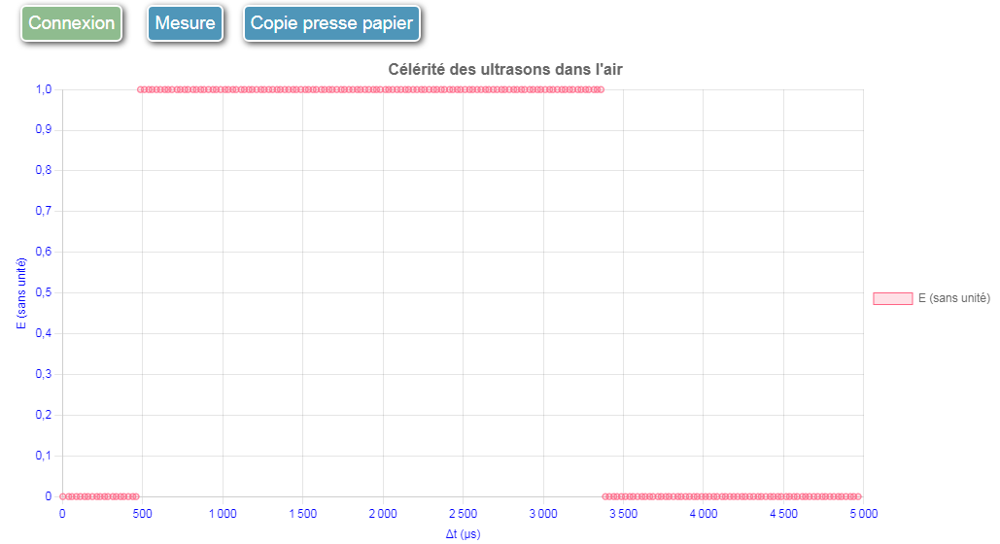
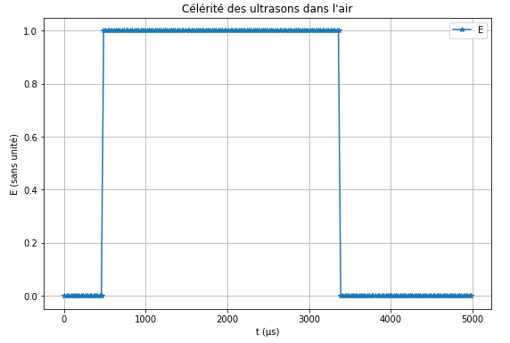

Célérité des ultrasons dans l'air.
temporel rapideLe capteur US Grove est relié au pin 4. Cet exemple de mesures temporelles rapides
à l'aide de la bibliothèque web_sciences permet de déterminer la célérité des ultrasons dans l'air en traçant
l'évolution de l'état du pin 4 en fonction du temps.
Le mode temporel permet de tracer une ou plusieurs grandeurs mesurées par Arduino en fonction du temps.
Le script :
mesure sur la liaison série.Remarque : Dans un soucis de rapidité, ce script a la particularité de stocker la série de mesure en mémoire et d'envoyer ensuite la totalité des données sur la liaison série. Une carte Arduino Uno réalise par exemple 200 points de mesures en 5 millisecondes sans difficulté.
Voir à cet effet les commentaires dans le code source du script capteur_us_tempo.ino.
Le code javascript:
temporel :
mode = "temporel";mesure lorsque l'utilisateur clique sur le bouton mesure:
commandes = [{texte_bouton:"Mesure", arduino:"mesure"}];temporel,
le temps est la première série par défaut et ne doit pas être ajouté à la variable series):
series = [{grandeur: "E", unite: ""}];axes = [{grandeur: "Δt", unite: "µs"}, {grandeur: "E", unite: "sans unité"}];Le code Javascript complet est le suivant :
mode = "temporel";
commandes = [{texte_bouton:"Mesure", arduino:"mesure"}];
series = [{grandeur: "E", unite: ""}];
titre_graphe = "Célérité des ultrasons dans l'air";
axes = [{grandeur: "Δt", unite: "µs"}, {grandeur: "E", unite: "sans unité"}];
Le code complet à insérer dans une cellule Jupyter
from web_sciences import WebSciences
my_init = '''
mode = "temporel";
commandes = [{texte_bouton:"Mesure", arduino:"mesure"}];
series = [{grandeur: "E", unite: ""}];
titre_graphe = "Célérité des ultrasons dans l'air";
axes = [{grandeur: "Δt", unite: "µs"}, {grandeur: "E", unite: "sans unité"}];
'''
interface = WebSciences(my_init)
interface.affiche()

Le traitement des données permet de tracer le graphe E = f(t) dont l'exploitation permet de déterminer la célérité des ultrasons dans l'air (voir le notebook ci-dessous).

Célérité des ultrasons dans l'air.

Circuit RC à tension constante.

Vérification de la loi de Mariotte.
Le module web_sciences a été écrit par un enseignant Français passionné d'informatique qui enseigne la physique en lycée depuis plus de 40 ans et NSI depuis sa création.